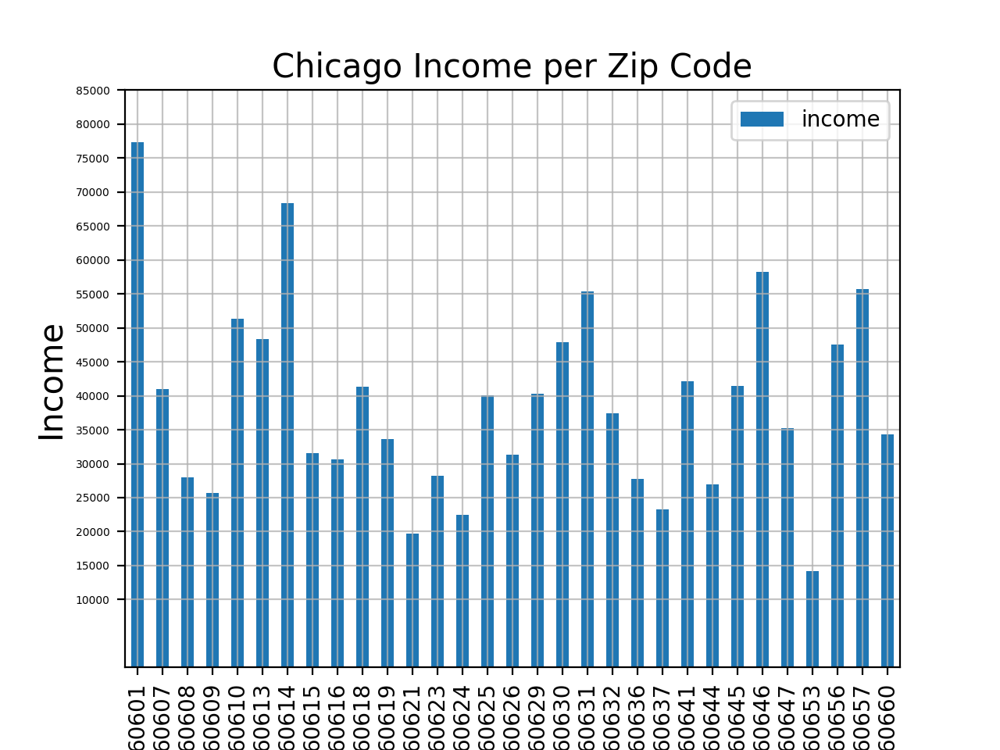
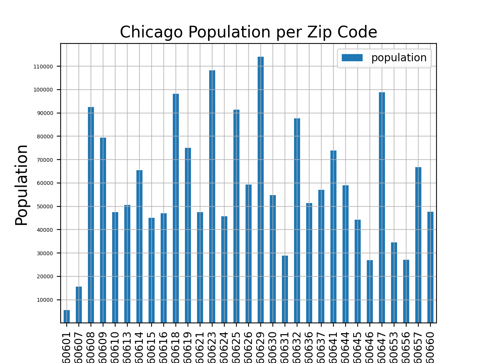
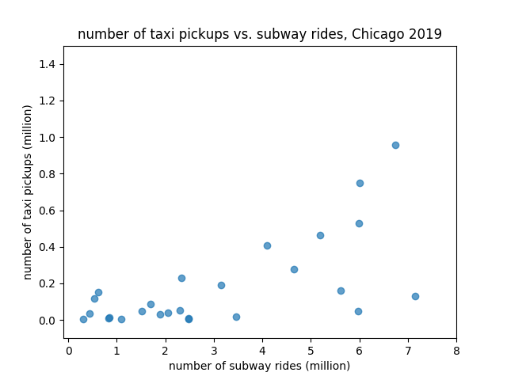
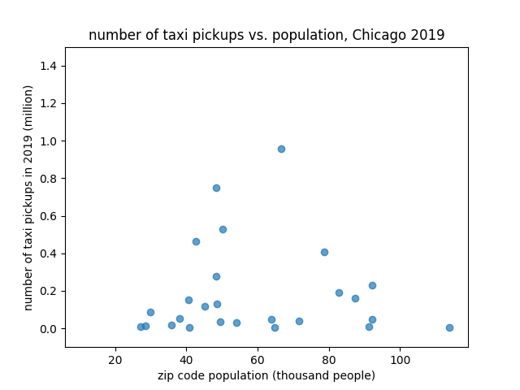
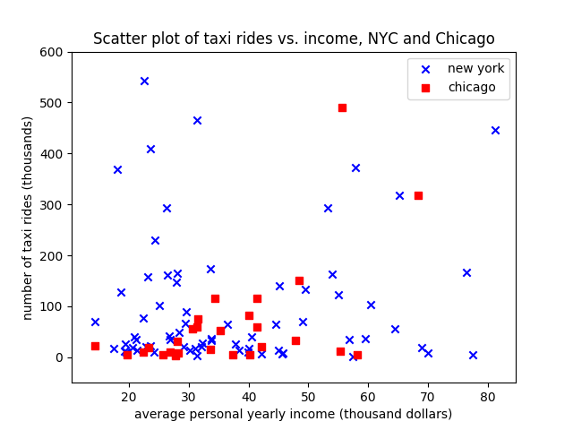

Our hypothesis is that there is a significant linear relationship between the dependent variable of taxi rides within a zip code and the independent variables of the number of station stations, the total number of subway rides, the population, and the average personal income of the same zip code.
We started off with some exploratory visualizations to illustrate some of the independent variables such as income and population.
We plotted histograms to document the average household income and population per zip code for Chicago.
These histograms allowed us to see what kind of underlying demographics is behind our transportation datasets of the two cities, which
made us to include population and income as two of our independent variables for our regression tasks later.


The horizontal axis of these histograms represents different zip codes, so the numerical values of the zip codes do not matter. While these histograms do not explain the correlation, they merely serve to represent the disparities in population and income that are related to disparities in transportation accessibility and quality.
We then examined scatter plots of the datasets hoping to see if there are patterns between our independent and dependent variables. We decided to use
scatter plots so that we can see where each data point lies on a graph with two of the variables we are examining, and from there we hoped to be able to
see some initial trends that we would test against using regressions.
When plotting for Chicago, we had to remove 5 zip code data points, because the numbers of taxi rides in these zip codes are significantly higher than other zip codes in the city.
Removing these extreme data points allowed us to have cleaner scatter plots where the points spread out in the range of the axis.
From these initial scatter plots, we managed to see weak correlation between our independent variables and the number of taxi rides in Chicago. For example, for the zip codes that have more subway rides, the number of taxi rides is also higher.

Another scenario we see from these initial scatter plots that is a little surprising is that population does not seem to correlate with the number of taxi rides within a zip code.

The initial scatter plots for New York City, however, show messier results with less obvious correlations. Here, we plotted Chicago and NYC's taxi pickups vs. income, organized by zip code.

It is interesting to see how the NYC taxi rides data points aggregate toward lower left corner, corresponding to the lower income. Visualizations like these where we combine the two cities'
distributions together will lead us to perform difference testing as one of our next steps.
We decided to do regressions because our hypothesis examines the potential correlations between different variables. We first performed simple regressions using a pair of two variables at a time, so the 4 independent variables for each simple regression is number of subway stations in a zip code, yearly total subway usage within a zip code, population, and average income of a zip code. The dependent variable for all four regressions is yearly total number of taxi usage within a zip code. We did a separate regression for the dropoff taxi rides and for the pickup taxi rides.
We also decided to examine the number of taxi pickups vs. taxi dropoffs separately with the goal of performing difference of means tests. We will not cover our difference testing in this deliverable, however, as it is still in progress.
We then chose to use a linear regression, because we were interested in exploring the relationship between the taxi rides and the independent variables. We weren’t doing a predictive task or a classification task,
so regression seemed like the most applicable technique.
We did a full regression for each city where we passed in all 4 independent variables with taxi rides as the dependent variable. One challenge we faced after doing the initial full regression is the scale of each of our variables: the taxi ride data is in the millions for Chicago and billions for New York City while the number of subway stations is usually a single-digit number. We decided to scale all the independent variables by dividing those columns by 1000, 1 million, or 1 billion, in order that the numbers in each independent variable’s column is more or less within 1 - 100.
We also did a simple regression for each of the 4 independent variables, for each type of taxi ride (pickup or dropoff), and for each city (Chicago or New York).
Before this iteration of linear regression, our datasets were structured differently such that each subway station has a row instead of each zip code having its own row.
We had originally also divided subway and taxi ridership information based on month for each zip code. To do the regression, we restructured our data so that the datasets were joined by zipcode. That is to say, a single row of our final dataset would include the number of taxi rides in 2019, number of subway stations, number of subway rides in 2019, population in 2010, and income in 2010 for a particular zipcode.
We’ll talk about the success of our project in the section where we interpret results of the multiple regression models.
Multiple regression summaries, simple regression summaries, scatterplots of the training data with best fit lines, and correlation matrices can be found here, here, here, and here. Results are categorized by city and taxi ride type (pickup or dropoff).
We decided in advance that the alpha level is 0.05. In the multiple regression summary, looking at the p-value for each variable’s coefficient will tell us whether that variable has a significant linear relationship with the number of taxi rides. For Chicago taxi dropoffs , only the total number of subway rides has a statistically significant positive linear relationship (p = 0.01). For Chicago taxi pickups , once again only the total number of subway rides has a statistically significant positive linear relationship (p = 0.01). For New York taxi dropoffs , both the number of subway rides (p = 0.04) and the average household income (p = 0.000) have statistically significant positive linear relationships. For New York taxi pickups , both the number of subway rides (p = 0.02) and the average household income (p = 0.000) have statistically significant positive linear relationships.
We deny the hypothesis that there is a statistically significant linear relationship between the number of taxi rides in a zip code and the population of a zipcode. We deny the hypothesis that there is a statistically significant linear relationship between the number of taxi rides in a zip code and the number of subway stations in a zipcode. For New York City only, we accept the hypothesis that there is a statistically significant linear relationship between the number of taxi rides in a zip code and the average household income in a zip code. For both New York City and Chicago, we accept the hypothesis that there is a statistically significant linear relationship between the number of taxi rides in a zip code and the number of subway rides in that zip code.
As mentioned in the Stats section, we plan to do more regressions and difference testings with our data. We also plan to present more advanced visualizations such as bubble maps and heat maps, using libraries from Plotly and OpenStreetMap.